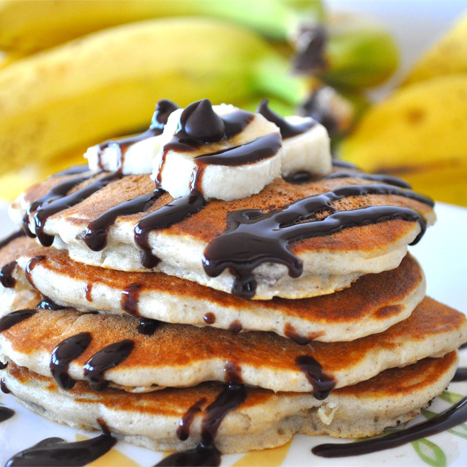

Chunky Monkey Recipe

By: Crazy Cat Lady
Description
I love banana pancakes and my daughter loves chocolate chip pancakes, so we came up with this yummy recipe to make us both happy! Serve with a dollop of soft butter, a sprinkle of powdered sugar, sliced bananas, and whipped cream with a side of butter pecan or maple syrup.
Ingredients
- Flour
- Baking Powder
- Baking Soda
- Skim Milk
- Butter
- Eggs
- White Sugar
- Vanilla extract
- Banana
- Mini Chocolate Chips
- Chopped Pecans
- Cooking spray
Directions
- Combine flour, baking powder, baking soda, and salt in a large bowl.
- Set bowl aside.
- In a separate bowl, whisk together the skim milk, melted butter, eggs, sugar, and vanilla.
- Make a well in the center of the dry ingredients and stir in the wet ingredients, being careful not to over mix the batter.
- Gently fold in the banana, chocolate chips, and nuts.
- Heat a large skillet over medium heat, and coat with cooking spray.
- Pour 1/4 cupfuls of batter onto the skillet, and cook until bubbles appear on the surface.
- Flip with a spatula, and cook until browned on the other side.